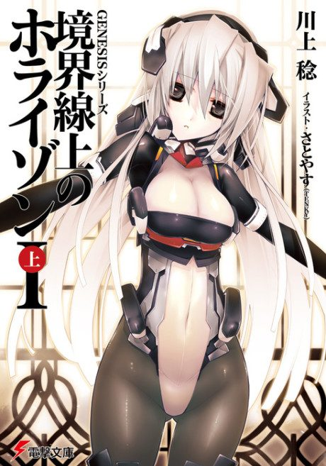

Horizon in the Middle of Nowhere
境界線上のホライゾン
In a future where humans re-enact history to get back to space, a boy decides to save a girl, and that sets off a war.
We haven't found where the anime ends in the light novel yet.
6.6AniList score
—Animeter, no votes yet
26episodes, 2 seasons
Rate it or report where you stopped
Anime finished. Where does the story go next?
StatusNo source yet
We looked for where the anime ends in the light novel but found no source we trust yet. The light novel is 872 chapters, finished.
More like Horizon in the Middle of Nowhere
 Original8.5
Original8.5
 Original8.3
Original8.3
 Novel ahead8.3
Novel ahead8.3
 Manga Ch. 228.4
Manga Ch. 228.4
 Done8.5
Done8.5
 Unclear6.1
Unclear6.1
 Done7.9
Done7.9
 Original7.8
Original7.8
 Done9.0
Done9.0
 Original8.8
Original8.8
 Manga Ch. 11518.7
Manga Ch. 11518.7
 Original6.9
Original6.9